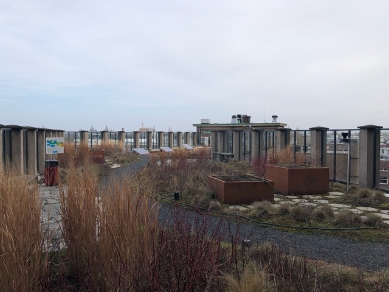
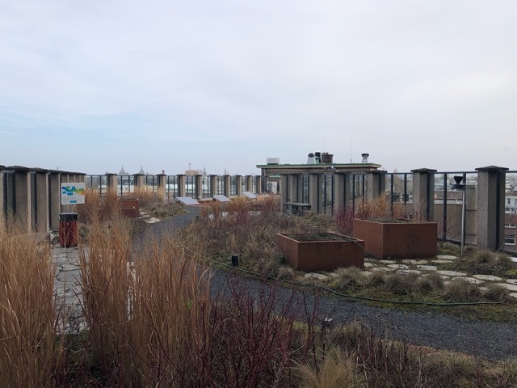
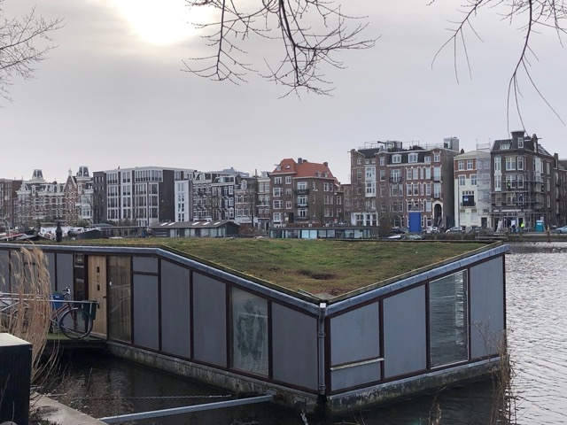
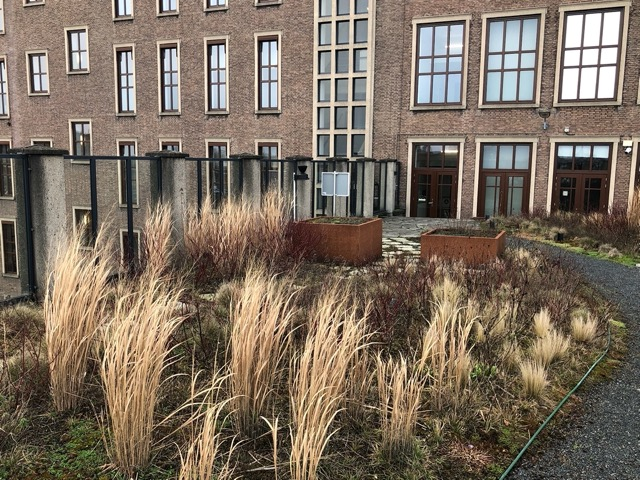

Groene Daken
Groene daken, of anders genoemd "vegetatie daken" of "begroeide daken", zijn daken die zijn begroeid met gras, mos, struiken en soms zelfs bomen. er zijn verschillende soorten groene daken zoals: Sedumdaken of kruidendaken.
Groene daken, of anders genoemd "vegetatie daken" of "begroeide daken", zijn daken die zijn begroeid met gras, mos, struiken en soms zelfs bomen. er zijn verschillende soorten groene daken zoals: Sedumdaken of kruidendaken.
Sedumdaken zijn de meest voorkomende groene daken in Amsterdam. Ze zijn zeer milieu vriendelijk, ze zorgen voor vermindering van CO2 in de lucht en helpen met het isoleren van je huis. Ook verlengt het de levensduur van je dak en kan zorgen voor een natuurlijke en aantrekkelijke uitstraling. Bovendien zijn ze door hun lichtgewicht geschikt voor schuine daken.
kruidendaken hebben vaak dezelfde functies als sedumdaken, ze zijn milieu vriendelijk, ze helpen met het het verminderen van CO2. Het enige grote verschil is dat kruidendaken vaak kleurrijker zijn. op kruidendaken groeien vaak veel verschillende soorten kleurrijke planten.
Sedumdaken en kruidendaken zijn extensieve groene daken. Dit betekend dat ze niet zwaar zijn en vrij weinig bodem nodig hebben om te groeien. Intensieve groene daken zijn groene daken die op grote schaal begroeing hebben, soms zelfs met bomen.